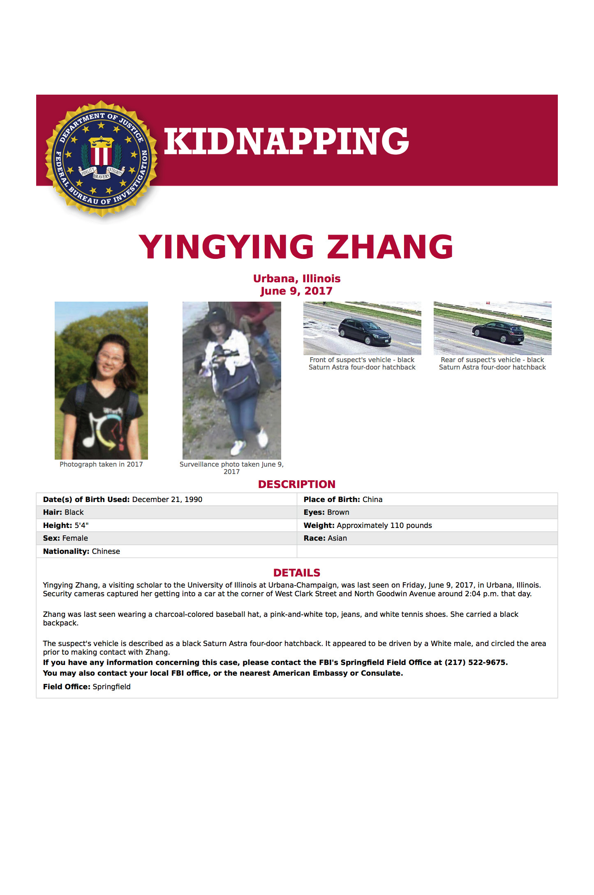
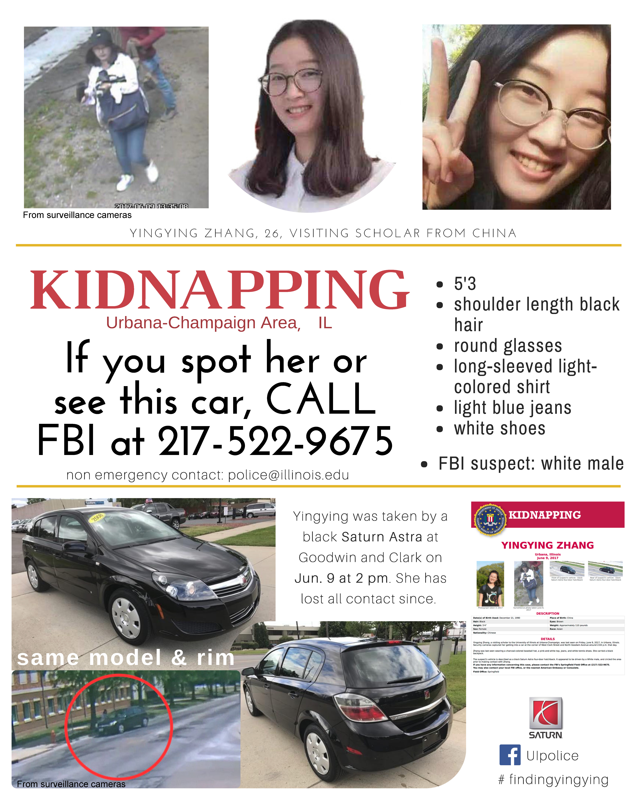

美国各高校的同学们，各地华人同胞们：
UIUC 访问学者章莹颖同学6月9日中午失踪，至今已超过5天。莹颖的安危牵动着所有人的心：从身边的同事老师和朋友，到当地华人群体，再到国内外，无数人志愿参与到寻找莹颖的工作中。现阶段，各级警方和FBI正全力开展搜救工作。中国驻芝加哥领事馆也代表中国政府和各方保持沟通；莹颖家人已顺利拿到赴美签证，预计将于美国当地周五(6月16日）或周六到达芝加哥机场，由芝加哥领馆直接接送至UIUC。UIUC校方已安排特别工作组负责莹颖家人的来访和接待。
昨天（6月14日）FBI正式发布了章莹颖同学失踪案件的官方通告，定性为绑架，犯罪嫌疑人为一名白人男子。因为莹颖失踪已超过五天，现在不排除嫌犯已逃亡其他地方的可能性，为了给案情的侦破开辟更多线索，在此我们号召大家一起行动起来，在全美范围内通过各种线上途径（Facebook, Twitter等）传播警方对莹颖失踪的搜寻通告，并在线下打印通告，在自己的城市和社区张贴传播。 多一份传播，多一份希望。我们与时间赛跑，盼莹颖平安归来。
莹颖家人老师和同事、UIUC CSSA
2017年6月15日
FBI官方寻人海报下载链接
Dear All,
FBI announced yesterday (Jun 14) that Yingying Zhang’s missing is a kidnapping case and it appears that the suspect is a white male (https://www.fbi.gov/wanted/kidnap/yingying-zhang/). Since Yingying Zhang has been missing for 5 days since June 9, it is possible that the suspect has gone to other states in the US. We sincerely and eagerly ask for your help! Please help us spread the flyer from FBI and ours through online social media (Facebook, Twitter, etc) as widely as possible, and print the flyers to post and distribute it in your local community. We greatly appreciate any of your help and action! Let's pray for Yingying's safe return!
Yingying Zhang’s family, her friends, and UIUC CSSA
June 15, 2017
FBI官方寻人海报下载链接
 